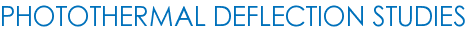
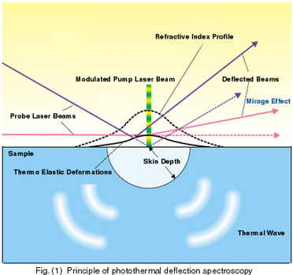

Home » Research » Thrust Areas

Photothermal Deflection Spectroscopy (PDS) was introduced by Claude Boccara, Daniele Fournier, and their collaborators in 1979 [Appl. Phys. Lett. 36, 130 (1979)]. The basic phenomena of PDS is the deflection of a light beam when it travels through a refractive index gradient created due to a temperature gradient in a medium. In PDS, two laser beams are used. One is the probe laser beam which pass through the sample being studied and the other is a modulated pump laser beam, whose wavelength is absorbed by the sample. Please see Fig. (1).

The modulated pump beam creates a thermal diffusion wave inside the sample. This is due to the conversion of optical energy that absorbed from the modulated pump beam to thermal energy. The optically generated thermal oscillation penetrates the surrounding gaseous or fluid medium within a thermal diffusion length and causes a modulated change in its refractive index right above the optically pumped region. A probe laser beam traveling parallel to the surface will be deflected harmonically and the phenomenon is known as the mirage effect or photothermal deflection. The amplitude and phase of the deflected probe beam carry information about the optical and thermophysical properties of the absorbing solid or liquid. Another source of deflection is the thermoelastic deformation bump generated by intermittent laser heating and thermal expansion. A probe laser beam directed at an angle to the surface will be deflected by the bump.
The deflection angle of the probe beam is usually measured using a position sensing detector which is placed at a distance from the sample. A change in angle at the sample results in a displacement of the probe laser spot on the detector. For small angles, the linear displacement of the probe laser beam spot is directly proportional to the deflection angle. The magnitude of the signal will be a function of the position of the probe laser beam from the surface. There is an optimum offset for maximum signal. This optimum offset is a function of time. This is the time that required for the change in temperature to diffuse to the region probed by the laser. For a particular offset distance, the time-dependent deflection signal will rise and then fall with time. The time to the maximum signal and the magnitude of the maximum signal are both functions of the displacement of the probe laser beam relative to the surface.
PTD can also be used to study transparent samples. There is a subtle distinction between the photothermal methods used for surface and transparent sample analysis. For surface analysis, the probe laser is used to detect a refractive index gradient formed in the media above the surface. In transparent samples, the refractive index is changed within the sample itself. To study these samples excitation and probe lasers propagate collinear through the sample. So the deflection angle signal is essentially the same as the pulsed laser photothermal lens inverse focal length. This method is very similar to photothermal lens spectroscopy. Photothermal lens and photothermal deflection methods both rely on the generation of a refractive index gradient in the sample itself. Collectively, they have become known as refractive index gradient detection or photothermal refraction spectroscopy methods.